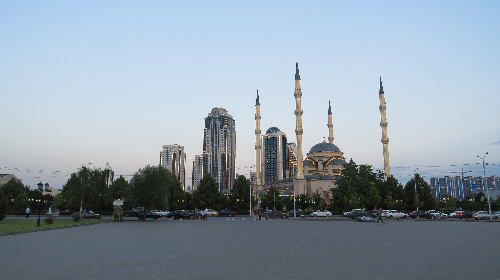

Путешествие по Северному Кавказу
|6 ноября 2023
В этой статье расскажем вам об экскурсии "Лучше гор могут быть только горы" от Магазина Путешествий по 3 республикам северного Кавказа: Северной Осетии, Чечне и Ингушетии.
Общая информация
Тур от магазина путешествий "Лучше гор могут быть только горы" идет 5 дней. За эти дни вы посетите 3 республики северного Кавказа. До всех достопримечательностей вас будут возить на комфортных автобусах, где есть кондиционер. Также предусмотрены обеды.
Жить можно в одной из предложенных гостиниц, их довольно много. Каждый день автобус будет подъезжать за вами к ней.
Стоимость тура на 1 человека - от 24500 рублей.
Полную информацию можно найти на сайте Магазина Путешествий
День 1
В 1 день вы доезжаете от аэропорта или вокзала до своей гостиницы во Владикавказе и заселяетесь в неё.

Вечером вас ждёт обзорная экскурсия по столице Северной Осетии - Владикавказу. Его часто называют кавказским Петербургом.

День 2
С утра вы завтракаете и выезжаете на экскурсию по трём ущельям в Северной Осетии.
Первым делом вы приезжаете в Кармадонское ущелье - одно из самых красивых в Осетии.

Оно известно сходом ледника Колка в 2002 году, в результате которого погибла съёмочная группа Сергея Бодрова.
Через 40 минут езды по горному серпантину вы спускаетесь вниз, в Даргавскую долину.

Здесь находится Даргавский некрополь, или, как еще его называют, "Город Мертвых". Он существует ещё с XIV века, сейчас здесь около 90 склепов.

Отсюда открывается вид на Даргавскую долину и древние сторожевые башни.

Проехав еще около 30 минут, вы оказываетесь в Куртатинском ущелье. Здесь расположены знаменитые фамильные башни Курта и Тага, а также самый высокогорный в России Свято-Успенский Аланский мужской монастырь.
Переехав на другую сторону ущелья, вы любуетесь другими фамильными и сторожевыми башнями, а также расположенным на дне ущелья городом Фиагдон.

Проехав немного по ущелью, вас высаживают около скальной крепости Дзивгис. Её построили во времена Тамерлана, она использовалась горцами для защиты от вражеских набегов.

Пообедав, вы примерно через 2 часа возвращаетесь во Владикавказ.
День 3
Позавтракав, вы отправляетесь на экскурсию в республику Чечня.
Первая остановка - Нихалоевские водопады. Это каскад из 12 водопадов, к каждому из которых можно подойти, постепенно поднимаясь по лестницам. Здесь можно сделать довольно впечетляющие фото.

Следующее место - Ушкалойские башни-близнецы. Они расположены прямо под отвесным склоном около реки. Здесь вам подробно расскажут о функциях сторожевых башен.

Здесь есть кафе, можно попить чаю, а ещё пройтись по верёвочному мосту, который тянется от одной стороны ущелья до другой на высоте более 30 метров прямо над горой рекой.

Примерно через 50 минут вас привезут в селение Итум-Кали, в краеведческий музей, который находится на территории башенного комплекса Пхакоч. Здесь вам расскажут, как жили чеченцы в эпоху Средневековья.
Через 2 часа вы наконец приезжаете в пригород Грозного - город Шали. Здесь вы обедаете, и отправляетесь смотреть потрясающе красивую мечеть "Гордость мусульман".
После этого вы презжаете в Грозный - столицу Чечни. Первым делом вы посещаете храм Архангела Михаила, а затем идёте гулять по большому цветочному парку с видом на небоскрёб Ахмат - тауэр.

Затем, вы поднимаетесь на лифте на смотровую площадку 33 этажа Ахмат - тауэр. Отсюда можно увидеть практически весь Грозный.
Спустившись, отправляемся смотреть главную достопримечательность Грозного.
Мечеть "Сердце Чечни" - духовное сердце Грозного. Издали она напоминает хрупкий цветок, а вблизи восхищает величием архитектуры.
На обратном пути вы заедете на 10 минут на мемориальный комплекс "Аллея Славы", а затем вернётесь в свою гостиницу во Владикавказе.
День 4
Сегодня вы увидите самые захватывающие пейзажи за все 5 дней тура. После завтрака вы выезжаете в Горную Ингушетию.
Первая достопримечательность - одна из фамильных башен в Джейрахском ущелье. На её вершину можно подняться.
Затем вы направляетесь к более крупному башенному комплексу - Эрзи. Здесь вам подробно расскажут о функциях и строительстве таких башен.

Через час пути вы подъезжаете к самой красивой точке маршрута.
Это смотровая площадка на Цей - лоамском перевале. Отсюда открываются умопомрачительные виды.
К 2024 году здесь будет обустроенная смотровая площадка со всей инфраструктурой.
Проехав ещё 10 минут, мы подъезжаем к небольшому кафе, здесь будет пикник-ланч. На втором этаже есть смотровая площадка, можно посидеть и насладиться вот таким видом:

Проехав около 30 минут по живописным полям Ингушетии, вы подъезжаете к месту, откуда хорошо видно один из крупнейших башенных комплексов Эгикал.

После этого вы въезжаете на территорию национального парка, и подъезжаете к древнейшему христианскому храму России Тхаба-Ерды. Он был построен ещё в VIII веке, и изначально был языческий.

Вообще здесь очень красивые места.

Вид на Ассинское ущелье, в котором находится храм:

После 30 минут езды по национальному парку, вы доезжаете до конечной точки маршрута - башенного комплекса Вовнушки.
Обратный путь займёт около 2,5 часов.
Вечером, за дополнительную плату вы можете сходить на Аланский вечер.
День 5
Сегодня последний день тура по Северному Кавказу.
С утра вы выезжаете на военно-осетинскую дорогу, ведущую к республике Южная Осетия. Первое место - памятник Уастырджи. В осетинской традиции Георгий Победоносец носит имя Уастырджи, который также является одним из главных героев Нартского эпоса. Уастырджи - покровитель мужчин, путников и воинов. Монумент считается одним из самых больших конных памятников в мире.

Доехав практически до Южной Осетии, вы оказываетесь в небольшом ауле. Здесь жил знаменитый осетинский поэт и писатель Коста Хетагуров. Здесь ему установлен памятник.

Здесь же находиться большое водохранилище высокогорной Зарамагской ГЭС.
Спустя 1,5 часа подъёма по горному серпантину, вы доезжаете до подножья горы Монах - жемчужины Северной Осетии.

На её склоне находиться знаменитый ледник Сказка. Вы можете подняться на канатногй дороге практически к самому леднику.


На верху можно погулять около 30 минут. Ещё здесь находится высокогорная турбаза "Сказка"

После этого вы отбываете во Владикавказ, где, если нужно, вас довозят до аэропорта или вокзала.
На этом тур "Лучше гор могут быть только горы" подошёл к концу!
Видео-обзор
Посмотреть подробный обзор тура можно по ссылке
Спасибо, что были с нами!
Посмотрите все статьи нашего сайта про интересные места со всего мира